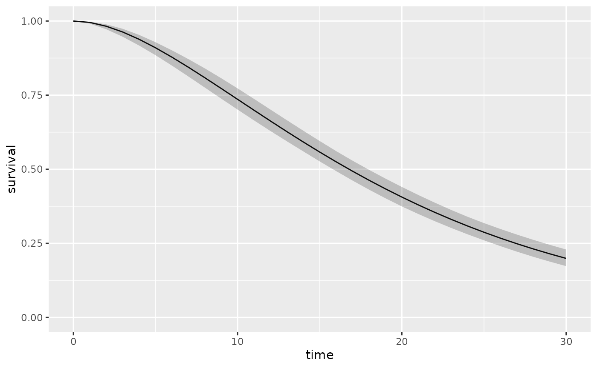
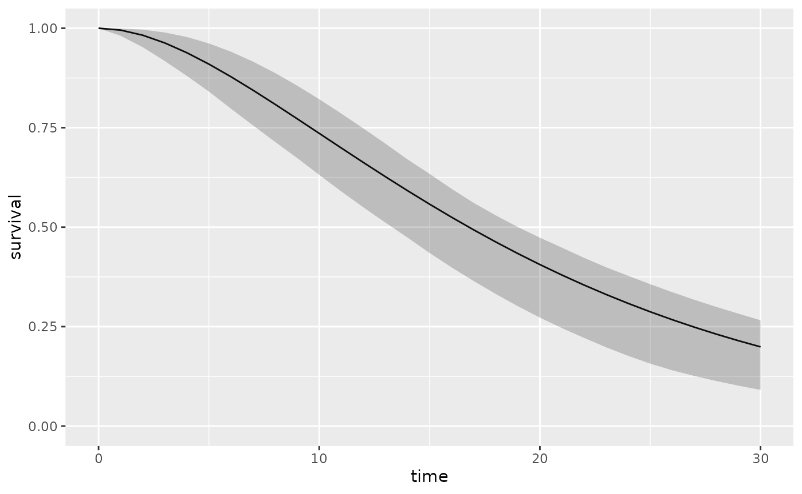
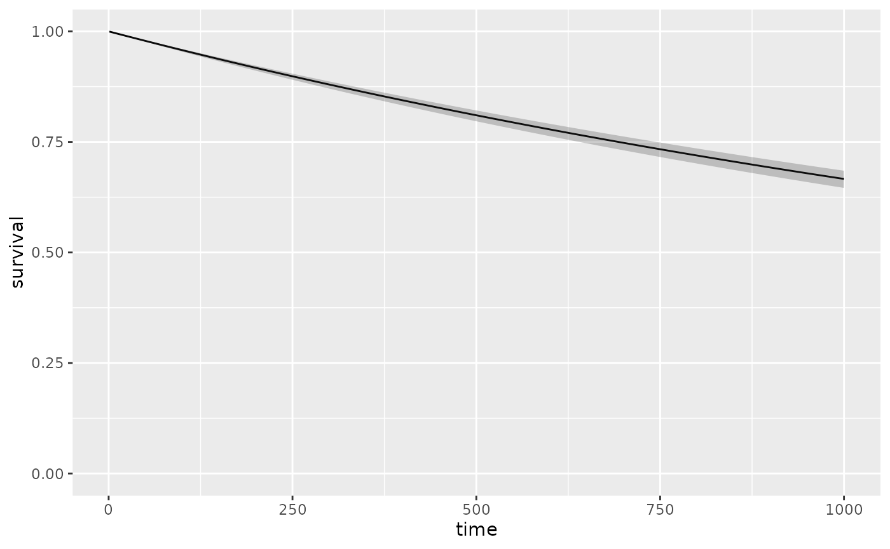
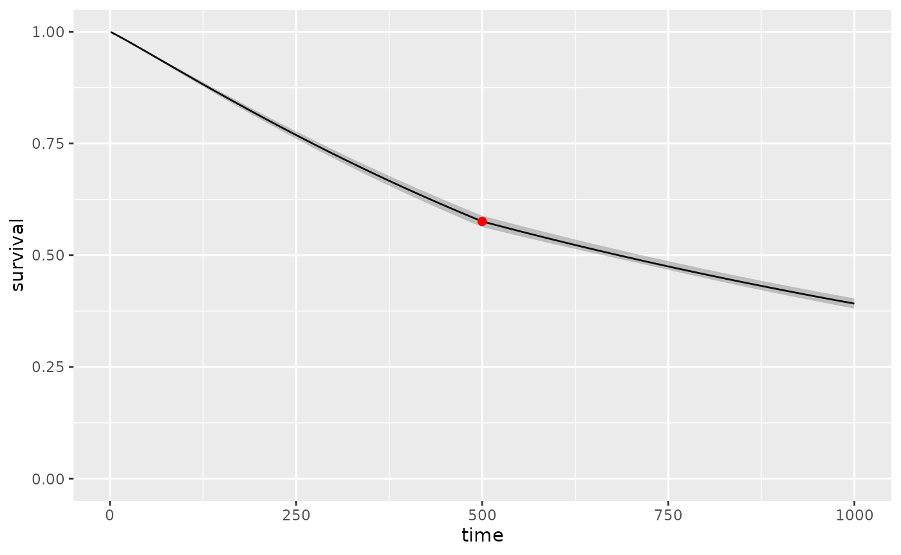

The aim of this vignette is to show how to perform probabilistic sensitivity analyses (PSA) on survival data.
The main function to use is resample_surv() within
define_psa().
From a user-defined parametric distribution
The resample_surv() function uses a random generator
with the parameters of the initially defined distribution. All you need
to do is specify the n argument to define the number of
draws, and you can control variability in this way (the higher
n is, the lower the variability). Under the hood, an
empirical cumulative function is created with these random draws and a
nonlinear model determining Least Squares estimates of the new
parameters is then fitted.
surv_dist <- define_surv_dist("gamma", shape = 2, rate = 0.1)
psa <- define_psa(surv_dist ~ resample_surv(n = 500))You can display the distribution and its confidence interval using
the plot() function. This is useful to check the expected
variability of your model.
psa2 <- define_psa(surv_dist ~ resample_surv(n = 50))
plot(surv_dist, psa = psa)
plot(surv_dist, psa = psa2)
From real data
A non-parametric bootstrap (random sampling) of the
data.frame is performed. At each iteration of the PSA, a
new data.frame is created and the model runs with this new
data. To perform a PSA with real data, resample_surv() must
not contain any arguments.
fit_cov <- flexsurv::flexsurvreg(survival::Surv(rectime, censrec) ~ group,
data = bc,
dist = "exp")|>
define_surv_fit()
psa <- define_psa(fit_cov ~ resample_surv())
plot(fit_cov, times = 1:1000, psa = psa, Nrep = 10)## No covariates provided, returning aggregate survival across all subjects.
It is possible to carry out a PSA with all objects of class
surv_object, including complex objects, created using a
sequence of operations. Taking the previous vignette as an example:
fitcov_poor <- set_covariates(fit_cov, group = "Poor")
fitcov_medium <- set_covariates(fit_cov, group = "Medium")
fit_w <- flexsurvreg(
formula = Surv(futime, fustat) ~ 1,
data = ovarian, dist = "weibull"
) |>
define_surv_fit()
fit_cov |>
set_covariates(group = "Good") |>
apply_hr(hr = 2) |>
mix(
fitcov_medium,
weights = c(0.25, 0.75)
) |>
add_hazards(
fit_w
) |>
join(
fitcov_poor,
at = 500
) |>
plot(psa = psa, 1:1000, Nrep = 10)